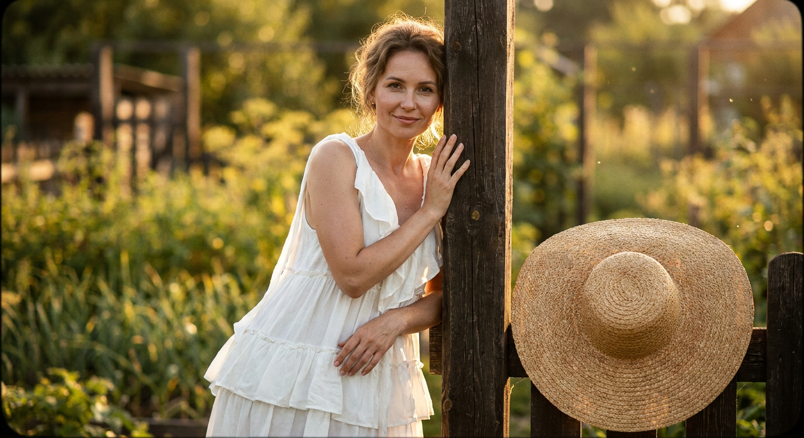
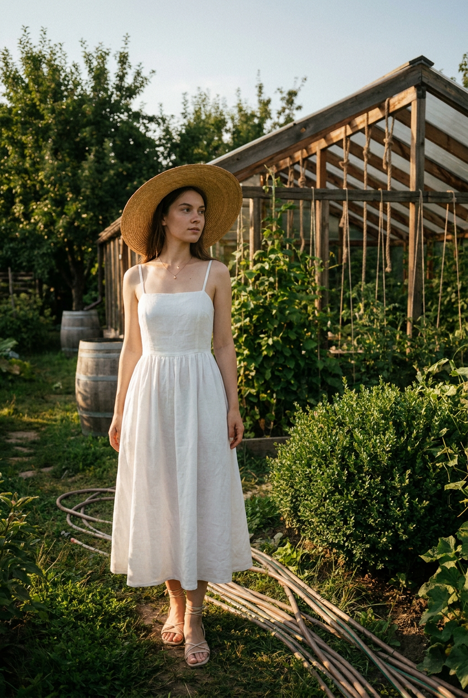
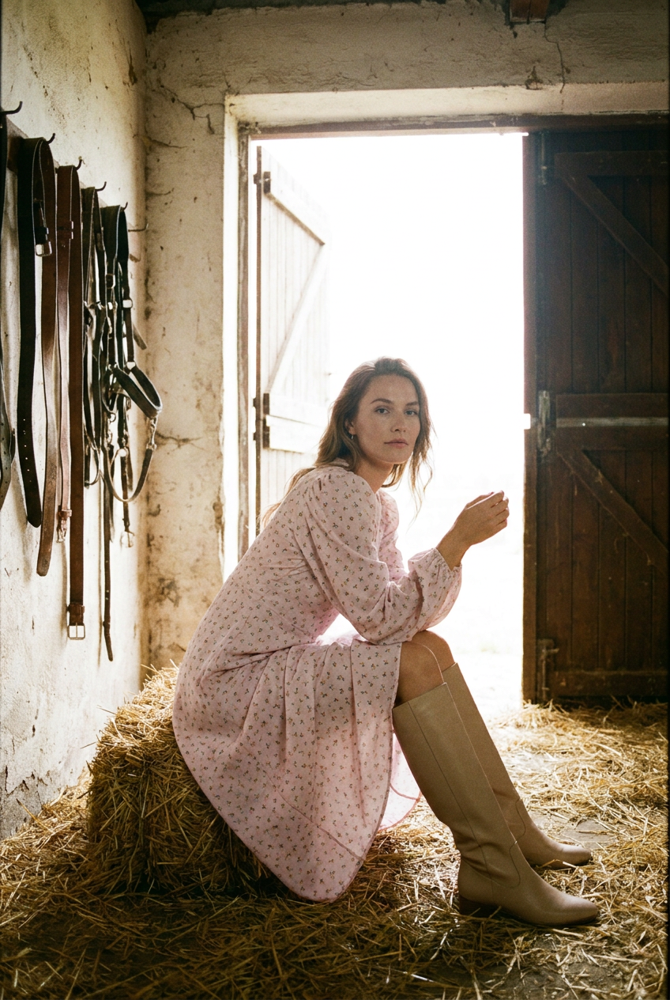
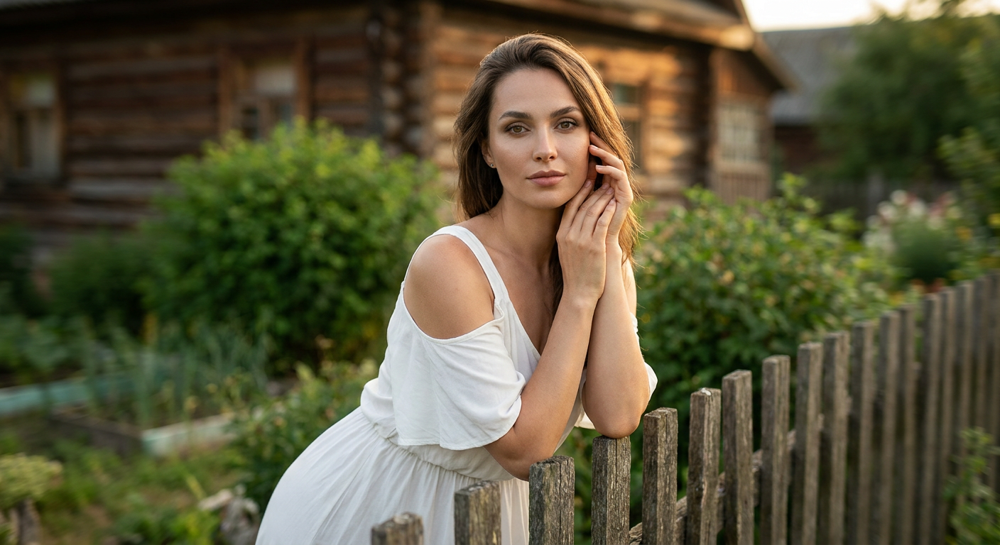
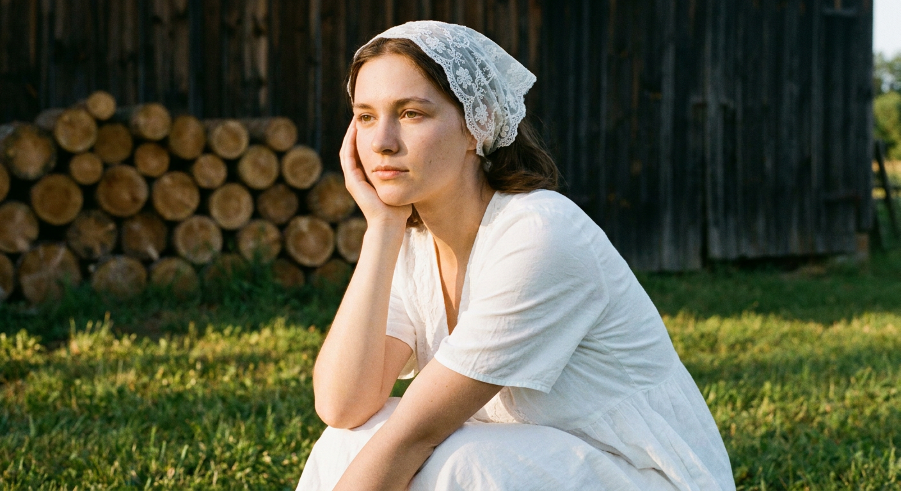
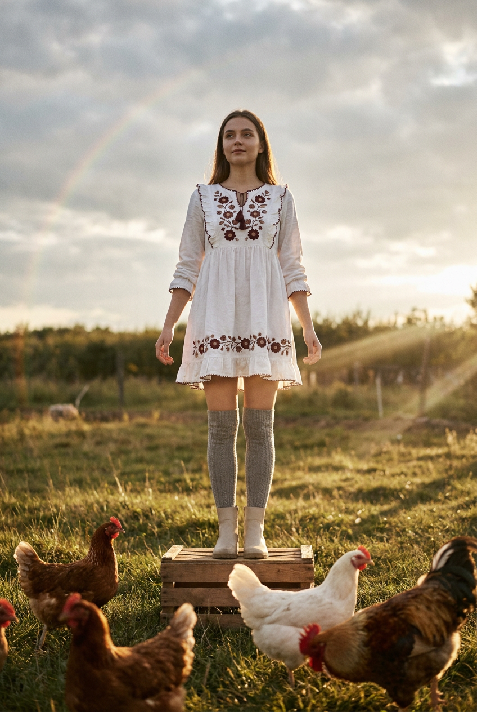
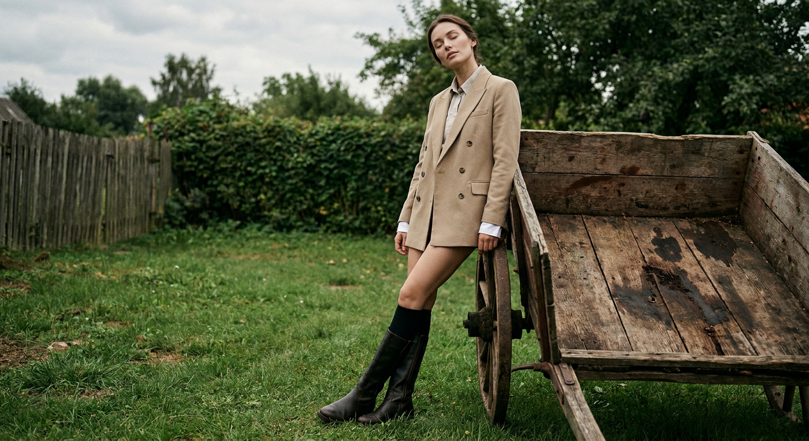
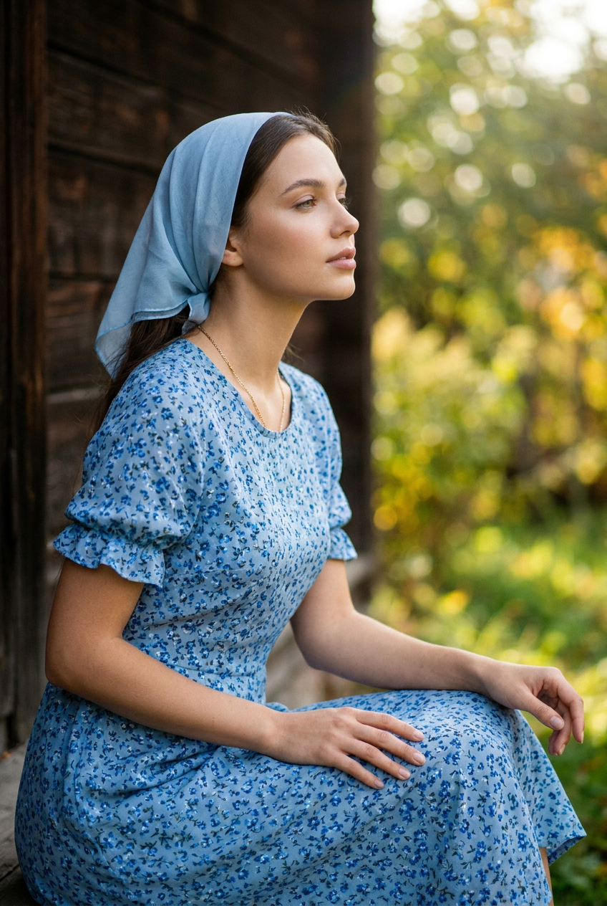
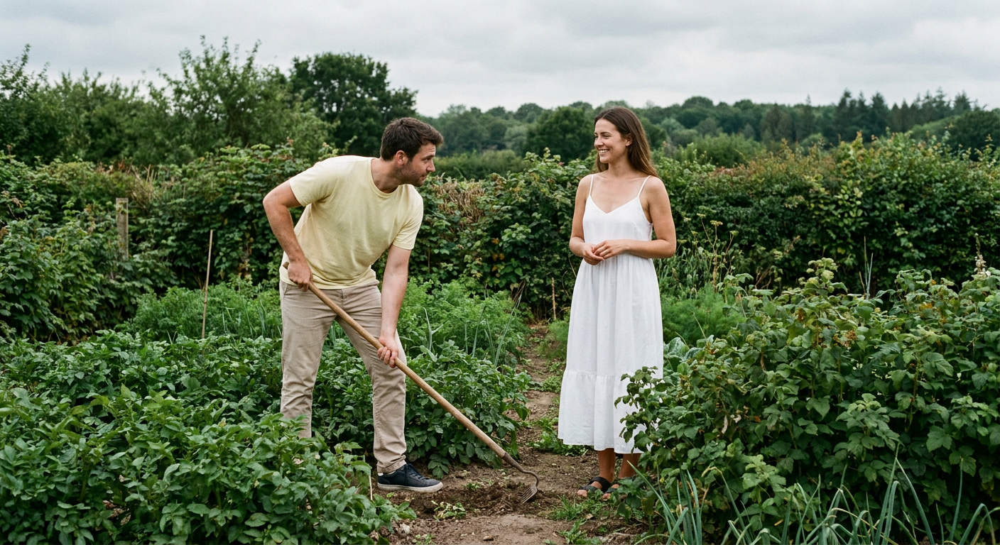
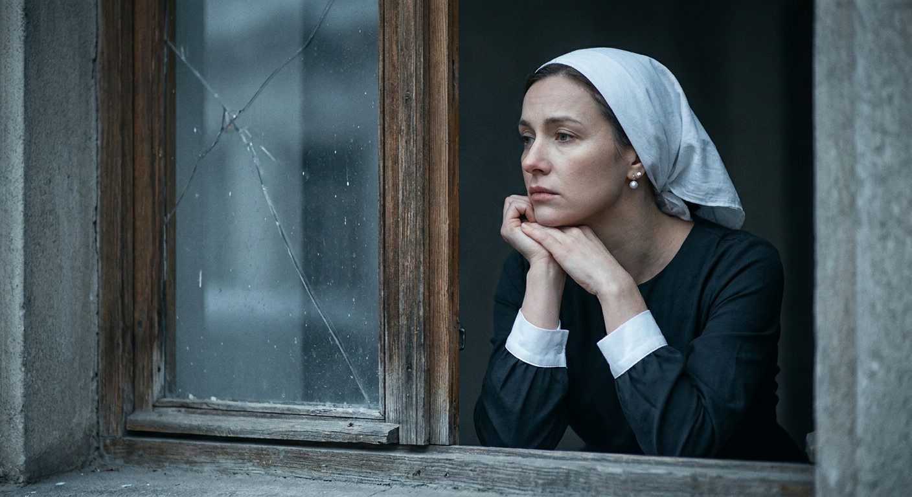

ИИ-фото в деревне: 10 промптов для нейросети

Снимки в деревенском стиле часто выглядят слишком постановочно: пластмассовая кожа, случайный фон и одежда без фактуры. Генерация помогает собрать нужную сцену заранее — от света golden hour до потёртого дерева и соломы.
В подборке — десять готовых сценариев с девушкой или парой: садовый портрет, амбар, дровник, пастбище с курами, старая телега, крыльцо и задумчивый взгляд через окно. Промпты можно использовать как основу и дополнять своим референсом.
Как сгенерировать такое фото: пошагово
Нужен снимок анфас при ровном свете, лицо в кадре целиком, без тёмных очков и головных уборов. Разрешение от 1000 пикселей по короткой стороне. Чем чётче исходник, тем точнее модель повторит черты.
Выберите сценарий ниже и нажмите «Копировать» — текст уйдёт в буфер целиком, вместе с командой сохранения внешности. Эта команда стоит первой строкой и отвечает за то, чтобы на выходе было ваше лицо, а не случайное.
Кнопка «Сгенерировать» рядом с каждым промптом открывает модель в новой вкладке. Nano Banana Pro работает с референсом лица — в отличие от моделей, которые генерируют портрет с нуля и узнаваемость теряют.
Промпт — в поле ввода, портрет — через загрузку референса. Порядок значения не имеет, но без референса команда сохранения внешности работать не будет: модели нечего сохранять.
Для сторис и ленты берите 9:16, для превью и обложек — 4:3. Первый результат редко идеален: если поза или свет ушли не туда, поправьте соответствующую часть промпта и запустите заново. Обычно хватает двух-трёх итераций.
10 промптов для генерации
1. Портрет у старого забора
Строго сохранить внешность по загруженному референсу: черты лица, пропорции, мимику и текстуру кожи без изменений. Фотореалистичный кинематографичный портрет девушки по загруженному референсу в деревенском саду тёплым летним вечером, на золотом часе. Она стоит у сельского двора и легко опирается на массивную деревянную перекладину забора. Дерево тёмное, шероховатое, со светлыми сколами и следами времени. Камера на уровне пояса, лёгкий нижний ракурс по диагонали: девушка занимает левую или центральную часть, ограждение и бревно — правую. На коже мягкий солнечный свет, макияж естественный, выражение спокойное, лёгкая улыбка, взгляд в камеру через полупрофиль. Волосы немного растрёпаны ветром. На ней лёгкий белый сарафан с драпировками и воланами, ткань свободно струится. Малая глубина резкости, натуральная текстура кожи, объектив 50 мм, f/2.
2. Девушка среди огородной зелени

Строго сохранить внешность по загруженному референсу: черты лица, пропорции, мимику и текстуру кожи без изменений. Сделайте фотореалистичный вертикальный кадр с девушкой по загруженному референсу в деревенском огороде поздним солнечным днём, в мягком свете golden hour. Камера установлена на уровне глаз, героиня стоит строго в центре. Вокруг — густые кусты, деревья, вьющиеся побеги, зелёные грядки, садовый шланг и детали живого сельского двора. На заднем плане видна теплица с деревянными балками и крышей, справа — вертикальные трубы, верёвки и подвязки растений, частично скрытые листвой. Слева разместите хозяйственные бочки и крупные садовые ёмкости. Девушка смотрит спокойно, поза естественная, без журнальной постановки. Сохранить реалистичную кожу, мягкие тени и глубину пространства. Вертикальный формат 4:5, объектив 50 мм, f/2.8.
3. Свет из дверей амбара

Строго сохранить внешность по загруженному референсу: черты лица, пропорции, мимику и текстуру кожи без изменений. Кинематографичный фотореалистичный кадр внутри старого деревенского амбара. Девушка по загруженному референсу находится в центре помещения, построенного из грубой неровной штукатурки бежево-серого оттенка. На стенах заметны потёртости, трещины и пятна. В левом углу на крюках висят кожаные ремни, уздечки и конское снаряжение с металлическими пряжками. Пол покрыт светло-золотистой соломой: видны тюки, отдельные стебли и мелкие крупинки. В центре — распахнутые деревянные двери с диагональными усилительными планками. Снаружи льётся яркий дневной свет, поэтому пейзаж за проёмом пересвечен и мягко размыт. Справа поставьте соломенный тюк. Свет контровой, атмосфера тихая и пыльная, натуральная фактура материалов, объектив 35 мм, f/2.8.
4. У бревенчатого дома

Строго сохранить внешность по загруженному референсу: черты лица, пропорции, мимику и текстуру кожи без изменений. Фотореалистичный портрет женщины по загруженному референсу на улице в деревне. Она стоит у старого забора из потемневших досок, слегка опираясь на него. Одна рука поднята к лицу, вторая придерживает предплечье. Поза лёгкая, взгляд уверенный и спокойный, направлен прямо в камеру; выражение романтичное, брови чуть приподняты. На женщине белое открытое платье или сарафан с аккуратной посадкой по фигуре и мягкими складками ткани. Макияж ухоженный, но натуральный, кожа живая, без пластикового блеска. Позади — небольшой деревянный дом из брёвен с окнами, зелёные кусты, молодые побеги и садовые растения. Героиня резкая, фон сильно размытый в боке; добавьте лёгкий боковой motion blur на заднем плане, будто камера двигалась. Объектив 85 мм, f/1.8, мягкий дневной свет.
5. Портрет у дровника

Строго сохранить внешность по загруженному референсу: черты лица, пропорции, мимику и текстуру кожи без изменений. Создайте фотореалистичный кинематографичный портрет молодой женщины по загруженному референсу на фоне деревенского дровника. Весь задний план занимает аккуратно сложенный штабель круглых брёвен: хорошо видны светлые торцы, кольца древесины и неровная фактура коры. За дровами — тёмная стена сарая или амбара. Женщина сидит на корточках на зелёной траве, колени согнуты, поза расслабленная. Локоть согнут, ладонь поддерживает голову, пальцы находятся у щеки или подбородка. Лицо повернуто примерно на три четверти, взгляд уходит влево за пределы кадра, выражение мягкое и спокойное, допустима лёгкая полуулыбка. Одежда простая и естественная, без глянцевой стилизации. Камера на уровне глаз или немного ниже, резкость на лице и передних стеблях травы, объектив 50 мм, f/2.2.
6. На пастбище среди кур

Строго сохранить внешность по загруженному референсу: черты лица, пропорции, мимику и текстуру кожи без изменений. Фотореалистичный сельский кадр: молодая девушка по загруженному референсу стоит в полный рост на деревянном ящике или тюке сена посреди зелёного деревенского пастбища. В нижней части изображения находятся домашние куры: несколько коричневых птиц, одна-две белые курицы и, по возможности, петух. Они частично перекрывают передний план. Девушка держит руки свободно вдоль тела, пальцы слегка раздвинуты, смотрит в камеру или немного выше неё. Настроение тихое, мечтательное, без театральной позы. Волосы растрёпаны ветром, отдельные пряди естественно выбиваются. На ней белое короткое народное платье или сарафан свободного силуэта, с вышивкой на передней части и рукавах: небольшие цветочные мотивы, бордовые и коричневые узоры. Солнечный рассеянный свет, натуральная трава, документальная правдоподобность, объектив 35 мм, f/4.
7. У старой деревянной телеги

Строго сохранить внешность по загруженному референсу: черты лица, пропорции, мимику и текстуру кожи без изменений. Кинематографичный фотореалистичный портрет девушки по загруженному референсу в деревенском дворе, полный рост. Она стоит на ухоженной траве и слегка наклоняется к старому деревянному элементу, похожему на телегу. Объект телеги занимает правую часть переднего плана: крупная фактура дерева, тёмные потёртости, трещины и следы долгого использования. Девушка смещена к центру или левой трети кадра, композиция построена по диагонали, камера находится чуть ниже уровня глаз. Выражение лица умиротворённое: глаза закрыты либо взгляд направлен в сторону и немного вверх, голова расслабленно наклонена. Макияж естественный, кожа матовая, с заметной реалистичной текстурой и мелкими деталями. Одежда деревенская, светлая и свободная, без современной глянцевой стилизации. Мягкий дневной свет, небольшое размытие фона, объектив 50 мм, f/2.8.
8. На старом крыльце

Строго сохранить внешность по загруженному референсу: черты лица, пропорции, мимику и текстуру кожи без изменений. Фотореалистичный портрет молодой женщины по загруженному референсу у старого деревянного крыльца или веранды. Девушка сидит либо полулежит рядом со стеной из тёмных вертикальных досок, корпус развёрнут вправо примерно на три четверти. Голова немного наклонена, взгляд направлен вдаль, выражение спокойное и мечтательное, губы расслаблены. Кожа ухоженная, матовая, макияж дневной, брови аккуратные, глаза выразительные. На голове небольшой светло-голубой платок-косынка из полупрозрачной ткани. На женщине голубое платье с мелким цветочным рисунком: маленькие синие и тёмно-синие цветы, короткие рукава с оборкой или присборенной окантовкой. Деревянная стена должна сохранить царапины, неровности и старую фактуру. Тихий рассеянный свет, малая глубина резкости, объектив 85 мм, f/2.
9. Работа в саду вдвоём

Строго сохранить внешность по загруженному референсу: черты лица, пропорции, мимику и текстуру кожи без изменений. Фотореалистичная документальная сцена на зелёном садовом участке в деревне. В кадре девушка и парень по загруженным референсам, их индивидуальные черты и естественные пропорции сохранены. Широкоугольная композиция снята на уровне пояса или глаз. В нижней трети — плотные грядки, листья и стебли, между кустами проходит узкая дорожка. Мужчина находится слева, слегка наклонён и держит длинную деревянную рукоять садового инструмента с металлической насадкой, похожей на тяпку или рыхлитель. Инструмент упирается в землю, руки лежат на рукояти уверенно, но без театральности. Его взгляд направлен вправо — к девушке или по линии работы. Девушка стоит справа среди густой зелени и смотрит на него либо вперёд. Одежда простая, повседневная, подходящая для сада. Натуральный дневной свет, живые листья на переднем плане, объектив 28 мм, f/4.
10. Задумчивый взгляд через окно

Строго сохранить внешность по загруженному референсу: черты лица, пропорции, мимику и текстуру кожи без изменений. Кинематографичный фотореалистичный портрет женщины по загруженному референсу, снятый через прямоугольное старое окно. Рама неровная, деревянная, с пылью, трещинами и следами износа; она заметно обрамляет изображение. Женщина расположена ближе к правой части кадра и слегка повёрнута в профиль, взгляд уходит влево. Настроение тихое, задумчивое, немного грустное; голова наклонена, подбородок почти касается пальцев. На ней светлый белый платок и небольшие серьги-гвоздики, жемчужные или металлические. Платье тёмное, с рукавами и белыми манжетами, на ткани видны естественные складки. Обе руки находятся у лица, пальцы слегка переплетены. Свет мягко падает из окна, подчёркивает пыль на раме и фактуру кожи, фон за стеклом приглушён и размыт. Объектив 85 мм, f/2, вертикальный формат 4:5.
Что важно учесть в этом стиле
Деревенское ИИ-фото держится не на количестве деталей, а на правдоподобных материалах. Укажите, из чего сделаны забор, стены, телега или рама окна, добавьте сколы, трещины, пыль, солому, листья и неровности ткани. Такие признаки делают сцену убедительнее.
Свет лучше задавать конкретно: golden hour, контровое солнце из дверного проёма или рассеянный дневной свет. Для портрета подойдут 50–85 мм и диафрагма f/1.8–f/2.8, для сцен с людьми и окружением — 28–35 мм и f/4. Не смешивайте сразу несколько схем освещения.
Идеи для вариаций
- Замените летний вечер на раннее утро с холодным туманом над травой.
- Добавьте дождь, мокрые доски и отражения в лужах у крыльца.
- Перенесите сцену в осень: жёлтые листья, шерстяной платок и дым из трубы.
- Попросите нейросеть сделать плёночную стилизацию с зерном и мягким выцветанием.
- Смените белый сарафан на льняное платье, фартук или традиционную рубаху.
- Для серии используйте один объектив, одинаковый формат 4:5 и повторяющуюся палитру.
Как собрать свой промпт
Начните с типа кадра и героя: портрет, полный рост, пара или документальная сцена. Затем задайте локацию, время суток, источник света, позу, направление взгляда и одежду. После этого добавьте 3–5 признаков фактуры — например, мокрые доски, кругляки брёвен, сухую солому или пыльное стекло.
В конце укажите технические параметры: фокусное расстояние, диафрагму, формат и глубину резкости. Для референса достаточно одной понятной формулировки о лице; не перегружайте запрос десятком повторов. Если результат далёк от задумки, меняйте за один раз только позу, свет или фон и делайте 3–5 итераций.
Ошибки, из-за которых кадр не получается
- Слишком общий фон. Фраза «красивая деревня» не задаёт сцену — перечислите конкретные объекты и их расположение.
- Несовместимый свет. Не просите одновременно жёсткое полуденное солнце, golden hour и мягкий контровик.
- Перегруженная поза. Одна понятная опора и одно направление взгляда выглядят естественнее сложной хореографии.
- Пластиковая кожа. Добавьте натуральную текстуру, матовый финиш, мягкие тени и уберите глянцевую ретушь.
- Случайные руки и пальцы. Опишите, где находятся локти, ладони и пальцы, особенно в сценах у лица.
- Плоская перспектива. Укажите высоту камеры, объектив и передний план, чтобы нейросеть поняла глубину кадра.
Частые вопросы
Как сделать такое ИИ-фото бесплатно?
Для первых попыток подойдут Kandinsky и Шедеврум: они позволяют генерировать изображения без оплаты, но могут ограничивать число запусков, разрешение и точность работы с референсом. Krea AI и Arena.ai удобны для экспериментов и сравнения вариантов, однако бесплатный режим обычно имеет ограничения по очереди, скорости, разрешению или доступным моделям. С лицом по фотографии результат не гарантирован: лучше использовать чёткий референс анфас, нейтральный свет и делать несколько итераций.
Как сохранить лицо человека на серии снимков?
Используйте один и тот же референс, не меняйте резко возраст, причёску и ракурс, а описание лица держите стабильным. Сначала добейтесь удачного портрета, затем меняйте только локацию, одежду или свет. Для сложных профилей может понадобиться 5–10 попыток.
Как получить больше реализма в деревенском фоне?
Описывайте не абстрактную атмосферу, а наблюдаемые детали: торцы брёвен, потемневшие доски, ржавые крепления, стебли соломы, садовые шланги и следы пыли. Добавьте естественные несовершенства и задайте объектив с диафрагмой.
Какой формат выбрать для таких изображений?
Для портрета и публикации в ленте удобно соотношение 4:5 или 2:3. Для сторис подойдёт вертикальный формат 9:16, а для сцены с двумя людьми и большим количеством окружения — горизонтальный 3:2. Формат лучше указать прямо в конце промпта.